This article series contains parts of my thesis about Kotlin Multiplatform. The thesis is based on my Fuller Stack project which consists of an Android App, a Kotlin React.JS app and a Ktor server. The full thesis pdf can be found here.
Part 1 Introduction and the Server
Part 2 The shared module (This part)
Part 3 The Web App
Part 4 The Android App
Part 5 The Summary
As stated in the first part, the shared module contains shared logic and data structures for the client platforms (Android and React). The platform modules depend on the shared module the most.
Structure
The shared module consists of other sub-modules:
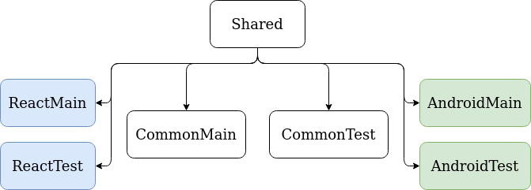
Each sub-module is grouped by the platform:
- Common contains code that is written in common Kotlin ensuring that it can be used by all other sub-modules;
- React contains code for the Kotlin/JS environment;
- Android contains corde for the Kotlin/JVM environment.
The platform groups are also split into two:
- Main suffix - contains code that other modules use;
- Test suffix - contains code for testing the corresponding "Main" sub-module.
The client modules for the apps (Android, React) have only a dependency on the shared module. The sub-modules are irrelevant because depending on the platform, only the corresponding will be included.
How the code is shared
The following sections will describe two ways which can be used to shared code: The "Expect and Actual declaration" and "Dependency inversion".
The Expect and Actual declaration
The declaration is a Kotlin Multiplatform specific feature. It works for most of Kotlin declarations, such as:
- Functions;
- Classes;
- Interfaces;
- Properties.
This mechanism works as follows: The Common sub-module "expects" that the declaration exists, and the platform sub-modules provide the "actual" declaration. One can imagine a situation where the shared common sub-module needs a function to log a message, but the platforms have different ways of doing it. Using the expect and actual declaration, the implementation could look like this:
//CommonMain
expect fun logMessage(message: String)
//ReactMain
actual fun logMessage(message: String) {
console.log(message)
}
//AndroidMain
actual fun logMessage(message: String) {
println(message)
}Thanks to this declaration the use of the logMessage function is the same for every module but their internal implementation is different depending on the platform.
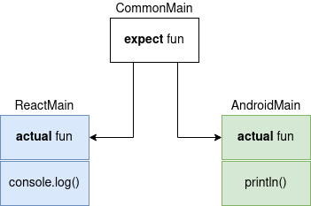
The expect, and actual declaration can also be used for data structures. Imagine a situation where the common code uses a database, but the platform specific database implementation requires a different convention for their entities:
//CommonMain
expect class ItemEntity {
val id: Int
val name: String
}
//ReactMain
actual data class ItemEntity(
actual val id: Int,
actual val name: String
)
//AndroidMain
import androidx.room.Entity
import androidx.room.PrimaryKey
@Entity(tableName = "items")
actual data class ItemEntity(
@PrimaryKey(autoGenerate = true) actual val id: Int,
actual val name: String
)The Android module uses the Room persistence library which requires additional annotations such as the database table name and the primary key, on the other hand the React does not need them. Thanks to the expect and actual declarations, this data structure can be used as one and the same, independently of platform specific implementations. This exact situation happened when working on this MSc thesis.
Dependency inversion
Dependency inversion is an object-oriented design which allows for better decoupling between modules. It also promotes better design by forcing classes to depend on abstraction instead of implementation. With dependency inversion, the shared module is able to use outside dependencies which are hidden behind abstraction, while the expect and actual declaration does not (without using dependency inversion).
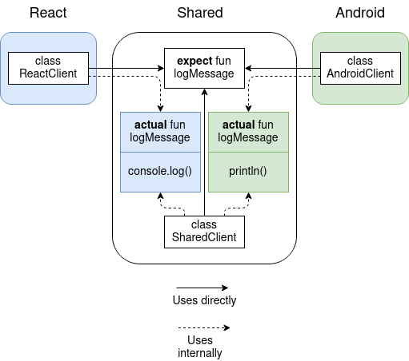
The Client class uses the logMessage function directly, but internally it maps to the platform specific implementation.
When a module needs something from another module, it depends on that module. In the previous Figure the React and Android modules depend on the Shared module in order to use the logMessage function. If the Shared module needs something from the React or Android module, it cannot simply depend on them because that would lead to circular dependency. As the red crosses suggest, this does not work and the code will not compile.
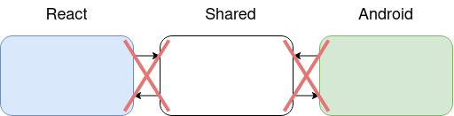
To allow the shared module to use something from an external module, dependency inversion shown can be applied.
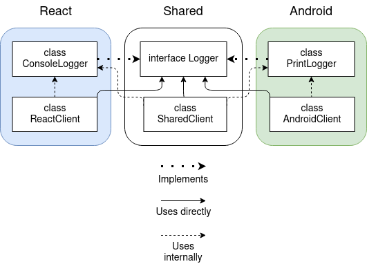
The platform specific implementation does not reside in the Shared module anymore, which allows the ConsoleLogger and PrintLogger classes to use other classes from their respective modules without creating a circular dependency. All clients use the Logger interface but behind their abstraction there is a platform specific implementation.
//CommonMain
interface Logger {
fun logMessage(message: String)
}
//React
interface ConsoleLogger : Logger {
override fun logMessage(message: String) {
console.log(message)
}
}
//Android
interface PrintLogger : Logger {
override fun logMessage(message: String) {
println(message)
}
}This technique is possible thanks to dependency injection. All clients have a dependency on the Logger interface without knowing about its internal implementation, which is injected into the clients constructor but are hidden behind an abstraction.
//CommonMain
class SharedClient(private val logger: Logger) {
...
}
//React
class ReactClient(private val logger: Logger) {
...
}
//Android
class AndroidClient(private val logger: Logger) {
...
}Module contents
Features
Most of the apps features reside in the shared module:
- Creating notes;
- Retrieving notes;
- Updating notes;
- Deleting notes;
- Synchronizing between the local and API notes;
- Real time note updates from the web socket;
- Sorting;
- Searching.
Most of these operations make use of the local database and the API, which differ between platforms. The React and Android modules provide those implementations.
Sorting and searching is implemented using only the Common Kotlin module which comes from the programming language itself.
Data structures
The most important data structures are the ones used for representing the notes.
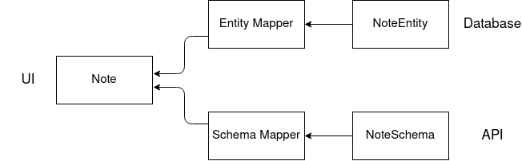
- Note - representation of the note in the UI on both client platforms;
- NoteEntity - database representation of the Note;
- NoteSchema - network representation of the Note.
The database data structure uses the expect and actual declaration. This means that their implementation details are different between the client platforms, but they behave in the same way. The reason for this is that the Android database data structures require additional information for the database to work correctly.
Other less important data structures include:
- Payloads - encapsulate data that is sent to the API;
- Structures with one value - Helper structures that make the code more decriptive. For example, instead of using a number type for creation and last modification timestamp, they are represented by two data structures CreationTimestamp and LastModificationTimestamp.
data class LastModificationTimestamp(val unix: Long)
data class CreationTimestamp(val unix: Long)Architecture
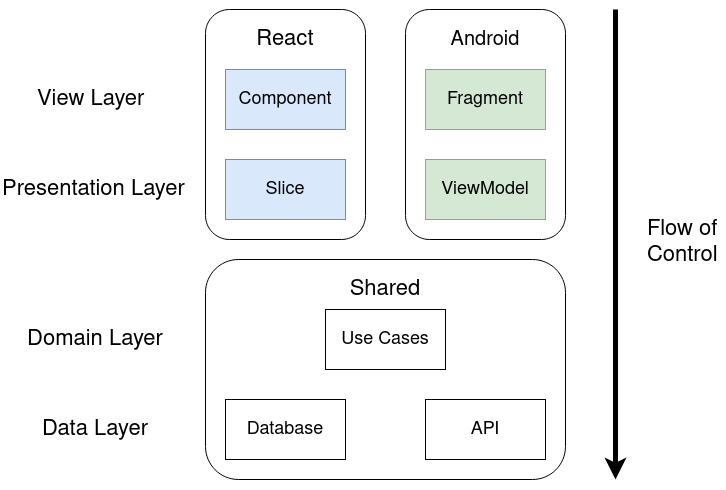
Flow of control means that the view layer calls the presentation layer, which then calls the domain layer and so on. The platform specific view and presentation layer will be briefly described here in an abstract manner and more in depth later in their respective chapters.
View layer
The view layer is responsible for showing the UI to the user and reacting to user input e.g. clicking. Usually, most of the classes in this layer are coupled to a framework, for example: Android or React.JS. The logic in this layer should only be related to showing the UI. Adding other logic to this layer makes it almost impossible to reuse in other layers. Additionally, this layer should only have a direct contact with the presentation layer, meaning that the presentation layer orchestrates the UI related data flow.
Presentation layer
The presentation layer orchestrates the data flow between the view layer and the domain layer. The view layer informs of a user (or a system) interaction, which the presentation layer interprets and calls the domain layer. Most of the time the domain layer returns data which is then prepared before being shown in the view.
Domain layer
The domain layer contains the "business logic" of the app (system). This logic defines how the app operates and what it can do. Most of the time, the features of an app are the business logic. In the case of this app, most of the business logic is contained within use cases (sometimes called interactors).
Use cases usually represent a single user (client) interaction with the system, for example: the logic for updating a note is encapsulated inside a use case class called "UpdateNote". All of the app features, mentioned in the previous section, are represented by use cases.
From an architecture standpoint, use cases help the codebase be more focused and follow the single responsibility principle. Thanks to them the project structure is more clear, and just basing on use cases it is possible to predict what a system does. For example, given a set of use cases called: "GetNotes", "AddNote" one can guess that a part of the system is responsible for managing notes.
The use cases used in this project are divided into two categories: "Synchronous" and "Asynchronous". The asynchronous use cases contact outside systems like databases or APIs. In other words, the asynchronous use cases have side effects in the form of persisting data or retrieving them. The synchronous use cases are side effect free.
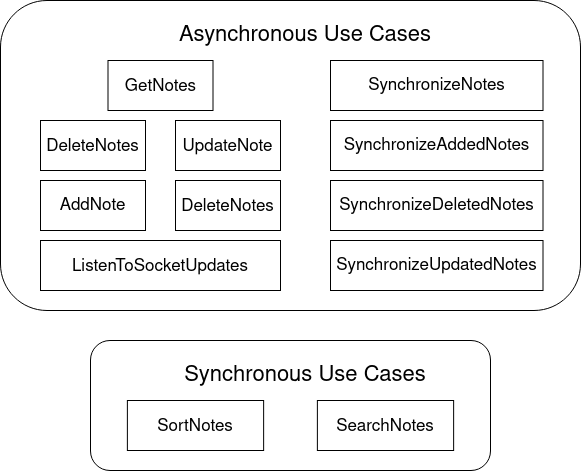
Every use case is related to the main functionality of the app which are "Notes". Additional use cases like "SingUserIn", "SignUserOut" could have been made if the authentication flow behaved in a similar way on both the client platforms. Unfortunately the authentication libraries used vary vastly between the web and Android.
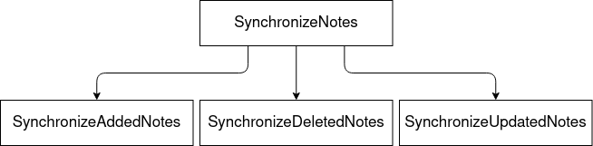
Use cases can also be composed of other use cases as is the case of the "SynchronizeNotes" use case, where it exploits other use cases underneath. This supports keeping the uses cases small or focused which, in turn, helps with the Single responsibility principle.
One of the most important things about the domain layer is that it should have no outside dependencies. The use of outside systems is possible thanks to the combination of dependency injection and dependency inversion.
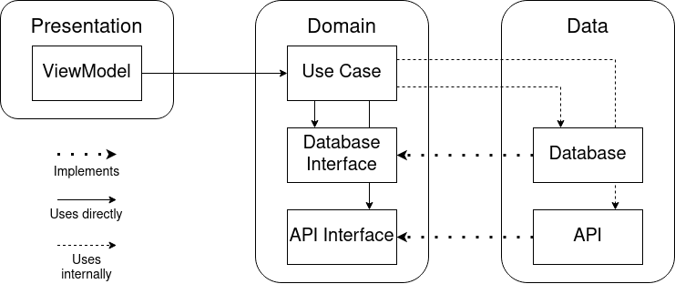
The use cases in the above example use the database and the API but only through an interface which is defined in the domain layer.
Data layer
The most notable things the data layer contains in this project are the data sources for the app, which in this case are a database, an API and a web socket. The interfaces for the data sources are defined in the domain layer, but their respective implementation resides in the client platforms.
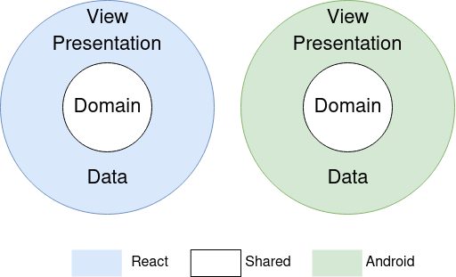
In this project besides the database and the API, there is an additional data persistence system which is used for settings. This persistence follows the same dependency rules as the previous data sources.
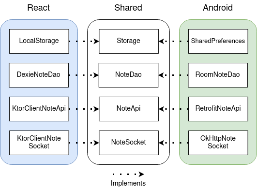
The details of the platform implementation will be covered in the coming Android and React parts.
Testing
The shared module contains the business logic for both of the apps (system) and because of this the shared module contains the most unit tests. The features of the system are represented by use cases which are the most important part of the system. Therefore the test mainly focuses on the use cases which all have their own unit test.
Most of the features connect with the database and the API (both referred to as a storage later). Unit tests have to be fast and reliable which unfortunately is not possible with the real implementation. Therefore, they cannot be used in unit tests because they are neither fast nor reliable (e.g. bad internet connection). Instead of the real implementations a test double can be used, which can be achieved through a framework/library or written by hand e.g. fakes.
For simplicity sake when referring to mocking I mean using a framework/library for it. Mocking is a way of providing a test double and defining its behavior or state in the test. Every class has public properties and/or functions the clients can use. Both of these things make up the contract which describes how a class can be used. The most straightforward way of defining a contract is through an interface but classes without an interface also define a contract. Additionally, they allow for checking if a mocked property or a function were used. Unfortunately, because of the nature of mocking it is hard to implement a library such that it would work with Kotlin Multiplatform. At the time of writing the thesis there is no reliable way of creating mocks without implementing them by hand.
Another way of defining test doubles are fakes which usually work in a similar way as the real implementation which usually use an in-memory cache instead of a database or API. The downside is that fakes can only be implemented for interfaces. Because of the nature of Kotlin Multiplatform mocking is difficult so fakes were used instead.
In the Shared module test suite the most important fakes are the ones that represent the database and the API. They just hold the state in memory which makes them ideal for testing. Most of the tests just assert that the storage has the correct state after executing an action. An additional fake was created for providing a predefined timestamp in order to have consistency when operating with notes timestamps.
The framework which was used for writing the shared module tests is called Kotest. It provides multiple ways of writing tests depending on the preference, however most of the testing styles leverage Kotlins great support for functions. Additionally, Kotest provides an additional library for making test assertions which use Kotlins capabilities for writing DSLs.
Technologies used
Because a lot of the implementations are provided by the client platforms which are only orchestrated by the shared module, libraries used in the shared module are sparse:
- Kotlin Coroutines - provides asynchronous programming features to the Kotlin languages. It is mainly used when communicating with outside systems like a database or the API;
- Klock - library used for operating with notes timestamps and formatting them to dates;
- Kotlin Serialization - provides JSON serialization for API requests and responses;
- Kodein - allows multiplatform dependency injection;
- Kotest - test framework with Kotlin Multiplatform support.
If you'd like to dive deeper into this topic check out my other articles
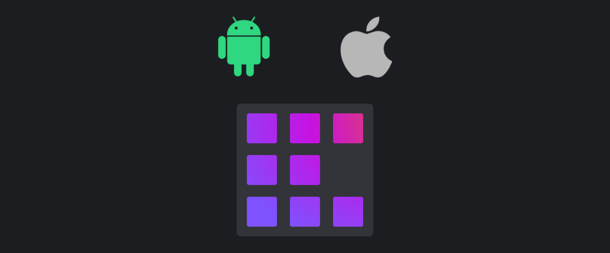
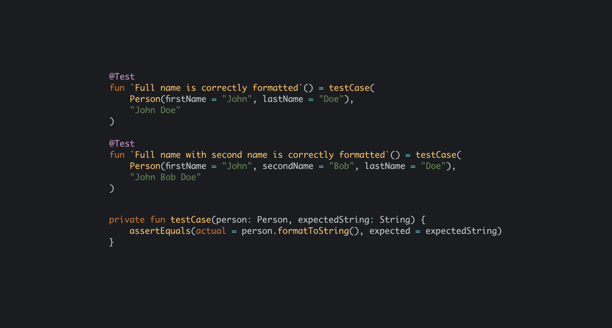
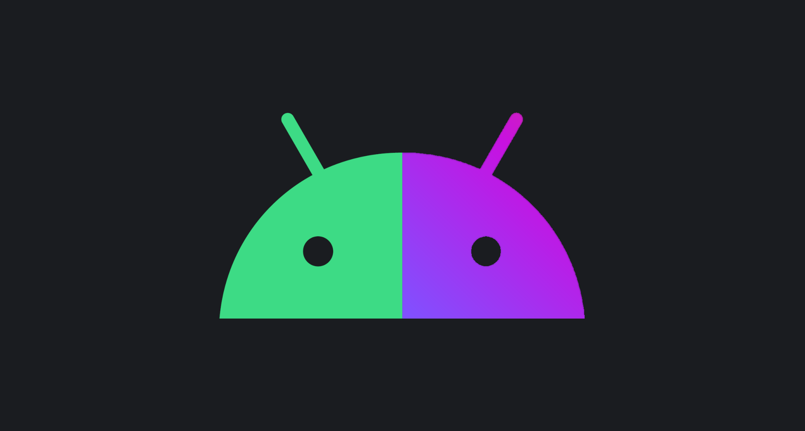